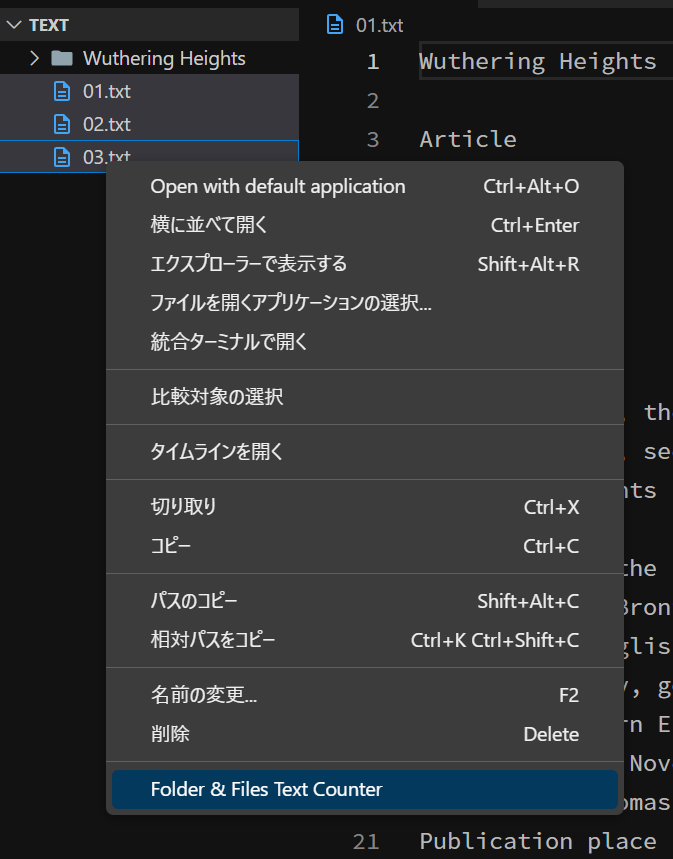

Folder & Files Text Counter


VSCodeのテキストファイル文字数カウント機能拡張
テキストファイルの文字数をカウントする機能拡張です。
エクスプローラー内でフォルダまたはファイルを選択して使用します。
右上のGitHubアイコンからフルコードにアクセスできます。

フォルダ内のテキストファイルをまとめて合計文字数を表示
テキストファイルが含まれるフォルダを選択して合計文字数を表示します。
一つ一つのファイルの文字数を足し合わせる必要がありません。

複数ファイルを同時選択して合計文字数を表示
複数のテキストファイルを同時選択しても合計文字数を表示します。
数あるワードカウンターの中でも他に見ないタイプの機能拡張です！